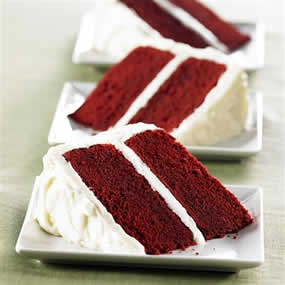
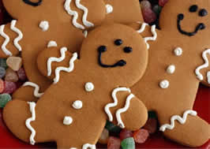

Recipes
Here is a collection of recipes that are tested and written by UW-Madison Pastry School's top pastry chefs:
Red Velvet Cake

Ingredient:
- 2 1/2 cups (250 grams) sifted cake flour
- 1/2 teaspoon salt
- 2 tablespoons (15 grams) regular or Dutch-processed cocoa powder
- 1/2 cup (113 grams) unsalted butter, at room temperature
- 1 1/2 cups (300 grams) granulated white sugar
- 2 large eggs
- 1 teaspoon pure vanilla extract
- 1 cup (240 ml) buttermilk
- 2 tablespoons liquid red food coloring
- 1 teaspoon white distilled vinegar
- 1 teaspoon baking soda
Procedure:
- Preheat oven to 350 degrees F (175 degrees C) and place rack in center of oven.
- Butter two - 9 inch (23 cm) round cake pans and line the bottoms of the pans with parchment paper. Set aside.
- In a mixing bowl sift together the flour, salt, and cocoa powder. Set aside.
- In bowl of your electric mixer, or with a hand mixer, beat the butter until soft (about 1-2 minutes).
- Add the sugar and beat until light and fluffy (about 2-3 minutes).
- Add the eggs, one at a time, beating well after each addition. Scrape down the sides of the bowl.
- Add the vanilla extract and beat until combined.
- In a measuring cup whisk the buttermilk with the red food coloring. With the mixer on low speed, alternately add the flour mixture and buttermilk to the butter mixture, in three additions, beginning and ending with the flour.
- In a small cup combine the vinegar and baking soda. Allow the mixture to fizz and then quickly fold into the cake batter.
- Working quickly, divide the batter evenly between the two prepared pans and smooth the tops with an offset spatula or the back of a spoon.
- Bake in the preheated oven for approximately 25 - 30 minutes, or until a toothpick inserted in the center of the cakes comes out clean.
Gingerbread Men

Ingredient:
- 3 cups (390 grams) all purpose flour
- 1/4 teaspoons salt
- 3/4 teaspoon baking soda
- 2 teaspoons ground ginger
- 1 teaspoon ground cinnamon
- 1/4 teaspoon ground nutmeg
- 1/4 teaspoon ground cloves
- 1/2 cup (113 grams) unsalted butter, room temperature
- 1/2 cup (100 grams) granulated white sugar
- 1 large egg
- 2/3 cup (160 ml) unsulphured molasses (To prevent molasses from sticking to the measuring cup, first spray the cup with a non stick vegetable spray.)
Procedure:
- In a large bowl, sift or whisk together the flour, salt, baking soda, and spices.
- In the bowl of your electric mixer (or with a hand mixer), with the paddle attachment, beat the butter and sugar until light and fluffy.
- Add the egg and molasses and beat until well combined.
- Gradually add the flour mixture beating until incorporated.
- Divide the dough in half, and wrap each half in plastic wrap and refrigerate for at least two hours or overnight.
- Preheat oven to 350 degrees F (177 degrees C) and place rack in center of oven.
- Line 2 baking sheets with parchment paper and set aside while you roll out the dough.
- On a lightly floured surface, roll out the dough to a thickness of about 1/4 inch. Use a gingerbread cutter to cut out the cookies.
- With an offset spatula lift the cut out cookies onto the baking sheet, placing the cookies about 1 inch (2.54 cm) apart.
- Bake for about 8 - 12 minutes depending on the size of the cookies. Small ones will take about 8 minutes, larger cookies will take about 12 minutes.